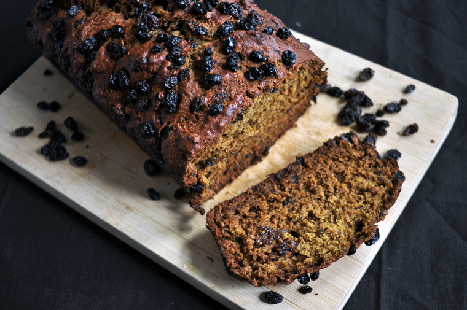

raisin beet bread
1 loaf — 60 minutes
If like Rekka's dad you like raisin bread, you will love this sweet raisin beet bread. It's halfway between a cake and bread. Adapted from an old cookbook by Margo Oliver les menus de margo oliver.
It's simple to make, and you can replace the raisins with currants or cranberries. If you make this recipe, just be sure to add plenty of raisins on top, we emptied a bag on it, without regret. They raisins get super crispy, and will develop a sweet crispy caramelized taste.
 dried raisins150 g, total
dried raisins150 g, total water240 ml, warm
water240 ml, warm vanilla extract2.5 ml
vanilla extract2.5 ml red beets2 small, puréed
red beets2 small, puréed flax seeds15 g
flax seeds15 g- water90 ml
 canola oil60 ml
canola oil60 ml natural brown sugar65 g
natural brown sugar65 g all purpose flour270 g
all purpose flour270 g salt2.5 g
salt2.5 g baking powder7 g
baking powder7 g
sweet bread
- Preheat oven to 180 °C (350 °F). Grease a baking pan with vegetable oil and set aside.
- Put 150 g (1 cup) of loosely packed dried raisins in a bowl, cover with 240 ml (1 cup) of warm water. Let cool, then add 2.5 ml (1/2 tsp) of vanilla extract.
- Peel and cut 2 small red beets into cubes, purée in food processor, set aside.
- Mix 15 g (2 tbsp) of ground flax seeds with 90 ml (6 tbsp) of water, let thicken. In a separate bowl, measure out 60 ml (1/4 cup) of canola oil. Add 65 g (1/3 cup) of natural commercial brown sugar, gradually, mixing at the same time. In that same bowl, add the flax seeds and the puréed beets. This is the sweet part of our bread: the cream.
- Mix your dry ingredients together, 270 g (2 1/4 cups) of all purpose flour, the 1.25 g (1/4 tsp) of salt and 7 g (1 1/2 tsp) of baking powder.
- Take your wet raisins and the bowl of flour, and add both in small gradual batches to the bowl of cream.
- Add spoonfuls of the wet dough to your greased pan, add the remaining 40 g (1/4 cup) of dried raisins on the top of the dough. Push down gently to make sure they stick.
- Bake in a conventional oven for 45 minutes. Let cool, before serving.